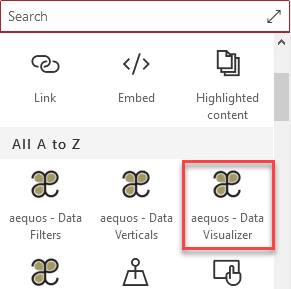
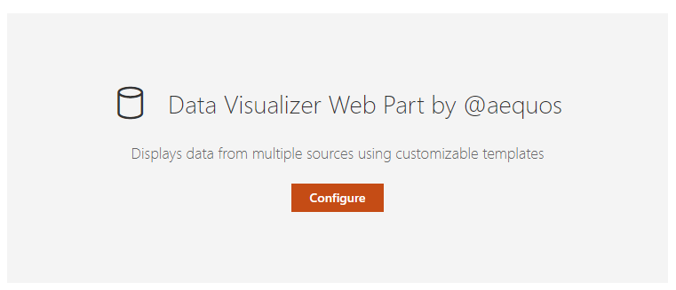

Data Visualizer Web Part¶
The 'Data Visualizer' Web Part is the fundamental building block of whole global solution. Its purpose is basically to get data from a specifc source and render them in a specific native or custom layout based on Handlebars and web components.
This Web Part can be used alone or connected to other Web Parts to add dyanmic interactions (filters, search box or verticals). To use the Web Part on a SharePoint page:
- Edit your SharePoint modern page.
- Search for the 'aequos - Data Visualizer' Web Part and add it to your page:


Data sources¶
The 'SharePoint Search' data source retrieve items from the SharePoint search engine.
The SharePoint search is different from the Microsoft Graph search.
Source configuration¶
| Setting | Description | Default value |
|---|---|---|
| Query text | The input query text to pass to the search engine. This setting is not configurable directly in the data source options. To enable it you use go the the third configuration page of the Web Part and selected either a static or dynamic value (Ex: from a connected search box Web Part). See the connection documentation for more information on how to configure this option. This value can be then used in the Query template using the {searchTerms} token. Also this value can be a Keyword Query Language expression (KQL). |
None. |
| Query template | The search query template to use. It allows you to use dynamic tokens according to the context or specifiy conditions that should always apply to the query. | {searchTerms} |
| Result source ID | Can be either a builtin result source ID listed in the dropdown or a custom result source GUID that you type. In this case to take effect, you must press 'Enter' to save the value. | LocalSharePointResults |
| Selected properties | The SharePoint managed properties to retrieve from the results. They can be used with the same name in layouts and slots afterwards. |
|
| Sort order | The initial results sort order. You will be able to select only 'Sortable' managed properties here. Make sure the selected properties satisfy this criteria in the SharePoint search schema. | None. |
| Refinement filters | The initial refinement filters to apply to the query. Both KQL (Keyword Query Language) and FQL (Fast Query Language) expressions work here (Ex: KQL FileType:docx, FQL: FileType:equals('docx')). They will be apply every time to the current search query regarless selected filters from connected Web Parts. |
None. |
| Language of the search request | The language to use for the search request. By default the search request will be made using the current user interface language. This parameter is mainly use to process diacritics, plurals, etc. correctly according to the language. | Current UI language. |
| Enable query rules | Whether or not apply SharePoint query rules. | False. |
| Include OneDrive for Business results | Whether or not include OneDrive for business results. | False. |
| Enable audience targeting | Whether or not results should be targeted according to the audiences that the current user belongs to. More information about modern audiences and how to configure them. | False. |
| Enable localization | If enabled, the Web Part will try to translate the taxonomy term IDs found in result item properties and refinement values to their corresponding label according to the curent UI language. To get it work, you must map a new refinable managed property associated with ows_taxId_ crawled property and turn this toggle 'on':  If enabled and depending how many items are currently displayed, this could be slightly decrease loading performances. If enabled and depending how many items are currently displayed, this could be slightly decrease loading performances. |
False. |
Be careful, when you switch the data source in the property pane, all the previous data source properties are lost. We do this to avoid polluting the Web Part property bag.